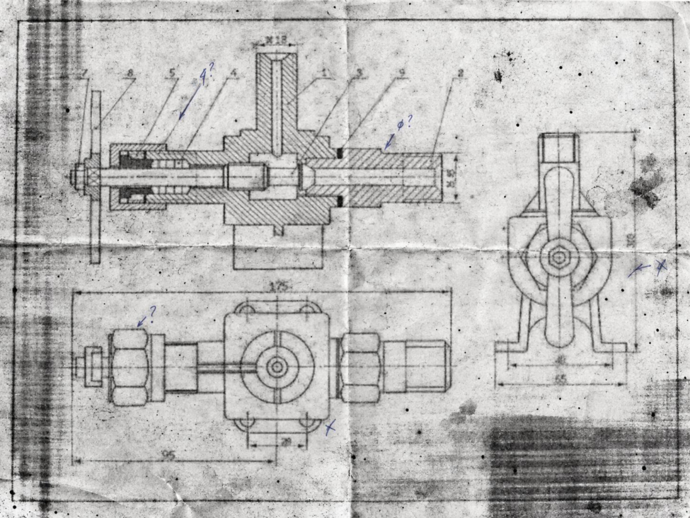

Convert old engineering drawings into editable CAD
The system reads a PDF or image and rebuilds its components in FreeCAD or QCAD. It checks the saved geometry, compares the output with the scan, and refines the drawing for review.
A degraded assembly drawing, rebuilt in CAD
Three views of an assembly, including a longitudinal section, internal passages, handle and union fittings. Cut material is represented by native hatches.



How the conversion works
- The model identifies views, components and drawing conventions.
- Local CAD scripts construct editable objects from validated data.
- The file is saved, reopened and checked. An evaluator reviews the rendering and requests corrections when needed.
The example above was built with QCAD and Astra. Its saved DXF passed native geometry and hatch checks. Dimensions that cannot be read reliably remain unconfirmed.
Two CAD backends
QCAD provides 2D blocks, layers, polylines and hatches. FreeCAD provides sketches and constraints, with a potential future 3D extension. Both remain in development.
Use and adaptation
Code and documentation are MIT-licensed. The same pipeline could be adapted to rough sketches by changing interpretation instructions and testing the required geometry.